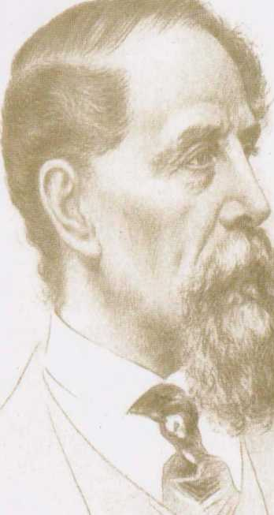

Charles Dickens
Müşterek Dostumuz

"Hiçbir 19. Yüzyıl romancısı, hatta Tolstoy bile, Dickens kadar güçlü değildir; onun yaratı zenginliği neredeyse Chaucer ve Shakespeare'le boy ölçüşür."
Harold Bloom
Müşterek Dostumuz’da Dickens, dönemin kapitalizminin başkenti Londra'daki hayata dair, belki de başka hiçbir romanında göremeyeceğimiz ölçüde geniş bir panorama sunar, çünkü, malum, para yokluğuyla bile her yerdedir. En alt tabakalardan en üst tabakalara mekik dokuyacağını zaten daha en baştan sezdirir Dickens. Roman Thames Nehri'ne düşen cesetleri toplama işi yapan ailenin rutin turlarından birinin tekinsiz betimlenişiyle açılır ve hemen ardından yeni zengin Veneeringler'in evindeki yemeğin ve davetlilerin alaycı ve olağanüstü komik bir biçimde anlatıldığı bölüm gelir. Romandaki müthiş dil ve üslup çeşitliliğinin de habercisidir bu iki bölüm. Dilbilimcilerin tabiriyle "sosyolekt"lere (ve tabii "idiolektlere" de) olağanüstü duyarlı bir kulağı olan Dickens, bu romanda bir yandan bütün toplumsal tabakaları gezerken, bir yandan da her birini anlatmaya en uygun dili ve üslubu da yakalar. Yakaladıktan sonra da uzun uzun keyfini çıkarır ve okuru da kendinden geçirir. Romanın zenginlikleri bu eleştirel ve çok geniş kapsamlı toplumsal içeriğiyle ve dilinin olağanüstülüğüyle de sınırlı değildir; bütün Dickens romanlarında olduğu gibi insani anlamda müthiş derinlikli sahneler bu romanda da fazlasıyla vardır.
Tuncay Birkan/Sunum'dan
"Charles Dickens ile ilgili olarak... söylenebilecek tek şey, deha sahibi bir insan olduğudur. Fransız çağdaşı Victor Hugo gibi Dickens da büyük bir romantik romancıydı... Byron, Scott ve Wordsworth denizin ve dağların güzelliğini keşfetmişlerdi; Dickens kenar mahallelerin duygu ve coşkularını keşfetti. Daha da önemli bir başka keşfi de, çocukluğun yalnız büyüsüydü. Suç izleği de çekici geldi Dickens'a; Dickens'ın anlattığı ve Dostoyevski'yi de etkilemiş olan cinayetler unutulmazdır."
Jorge Luis Borges
TARİH TOPLUM KURAM- 542 ISBN: 978-605-375-034-5
ithaki